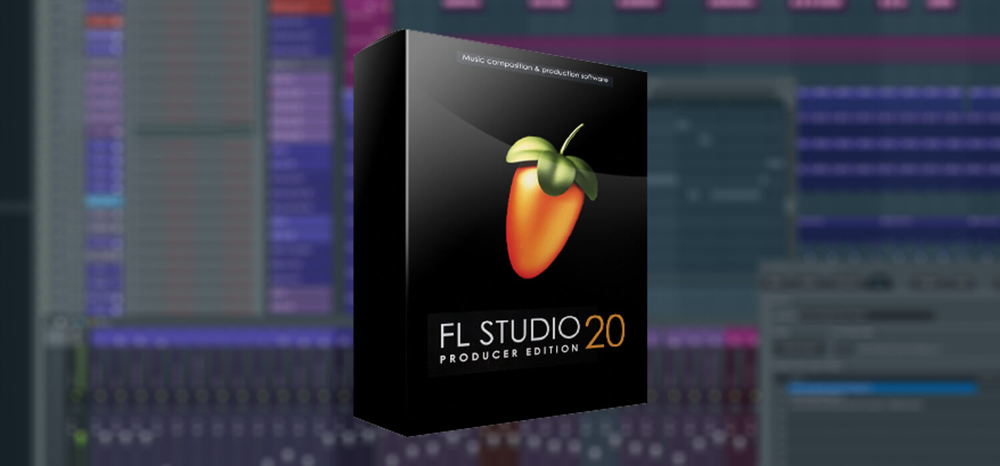

List of Favorites:
 
| Topic | Favorites |
|---|---|
Movies |
Ready Player One, Speed Racer, Ford vs. Ferrari |
Hobbies |
skateboarding, making beats |
Colors |
blue, pink, yellow |
Instruments |
Piano, Guitar |
Music |
Juice WRLD, Travis Scott |
People |
Family, Friends |
Shows |
The Flash, Rick and Morty |
Sports |
Cross Country, Track & Field, and Soccer |
Video games |
Rocket League, Among Us, GTA V |
Album:
Runtime: 17:46 (wear headphones)
Why I'm taking web design:
I'm taking web design, not only for collage credit but also to allow myself to explore a field of opportunity that I'm intrested in. I've always found computers such an amazing invention that has changed our world. When I'm older, I hope to work in this environment. However, to get there I must set goals for myself. Some goals I hope to reach by senior year is graduating, getting outstanding grades, and making new friends.